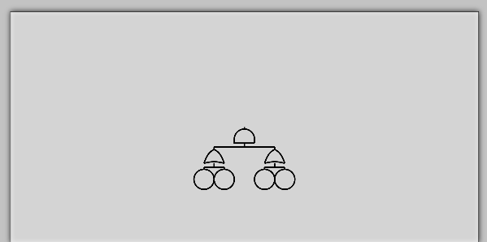

The Fault Tree is drawn using an algorithm which takes into account the total width of the tree, the amount of children in the tree, and the space used already on the tree - to position the nodes.
The minimap is drawn using context.drawImage, from the same buffer as the main fault tree, but scaled to 30% of it's size. It shows the total size of the backbuffer (scaled to a fixed size), with a rect drawn to the relative size of the view port.
The zooming is achieved by taking the wheel delta and interpolating the scale of the tree towards it from 0-100% for fast smooth zooming.
Fit to scale works by calculating the scale at which the longest side of the tree will fit along the length of the viewport, using the same code as zoom functionality to interpolate towards the desired zoom level.